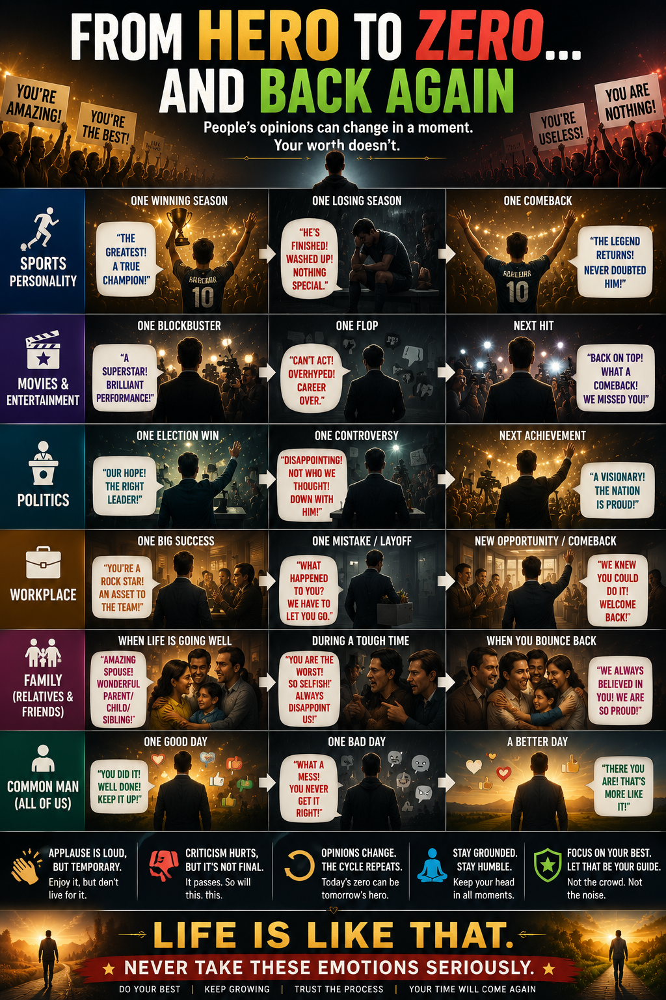

Genius after one winning season. "Finished" after one losing one. Same player. Only the headline moved.

01Same Person, Different Headline
One winning season, a champion. One losing season, "finished."
Same playerOne hit, a superstar. One flop, "overhyped, career over."
Same talentOne good quarter, a rock star. One mistake, let go.
Same workA good post gets hearts. A bad day gets silence, or worse.
Same youThe person never changes. The read on them does.
02The Eight Winds
Buddhism named this 2,500 years ago: loka-dhamma, the eight worldly winds. Four pairs, always arriving together. Weather, not verdicts.
03Winning More Isn't the Fix
Psychologist Jennifer Crocker's research on contingent self-worth: the more identity depends on results, the more volatile it gets. Borrowed esteem has to be re-earned. Owned esteem doesn't.
The volatility is the price of a currency you don't control.
04What Doesn't Move
Four doors, one room: the vote was about the crowd's mood. Never about your worth.
The crowd wasn't rating you. It was reporting its own excitement — a currency that spends fast and swings hard. Auditing your worth against a number you don't control isn't humility. It's outsourcing the one job that was always yours.
05Staying Standing
Separate the Verdict From the Self
"They think I'm finished" ≠ "I am finished."
Let Praise Pass Through
Enjoy it. Don't bank your identity in it.
Let Criticism Pass Through
Loud isn't the same as final.
Return to Your Own Standard
The one measure that doesn't move with the audience.
The part worth sitting with
Today's headline is tomorrow's forgotten tab. The mountain was never in the vote.